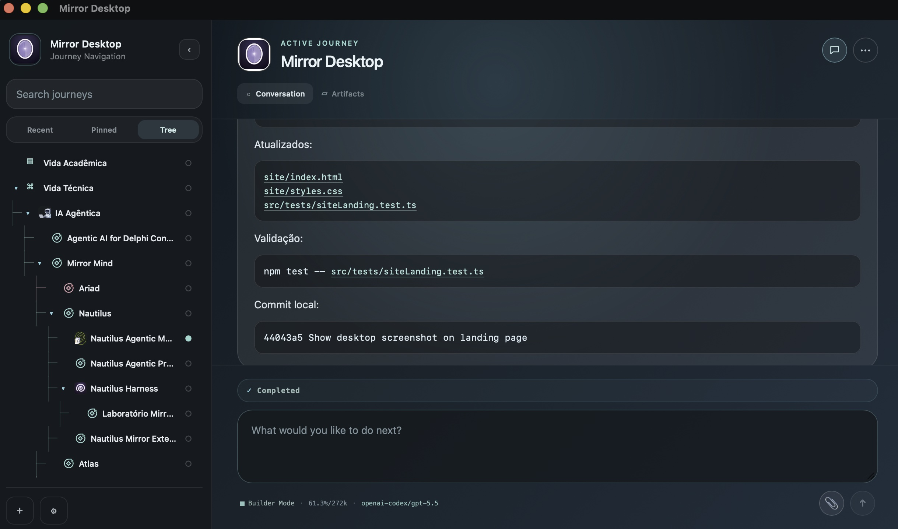

Remember the thread.
Your agents can return to the same context instead of rebuilding it from scratch.
local-first continuity for agents
Mirror Mind gives your agents a local memory of who you are, what you are building, and the journeys already in motion.
Your identity, memory, personas, attachments, and skills stay with you, turning separate AI sessions into one continuous working relationship.

what changes
Your agents can return to the same context instead of rebuilding it from scratch.
Journeys preserve direction across conversations, tools, and sessions.
Use Mirror Core from agent runtimes or Mirror Desktop as a local app.
Identity, conversations, attachments, and runtime state remain on your machine.
four ways to cross the terrain
Return to yourself before deciding. Use the agent as a reflective surface for sensemaking, positioning, writing, and life direction.
Hold uncertainty without rushing into implementation. Let possibilities thicken before they become commitments.
When the direction is clear, move into construction. Edit code, shape docs, run validations, and preserve the reasons behind the work.
Enter a quieter listening mode for inner life. Not productivity, not advice, but a ritual surface for what is asking to be heard.